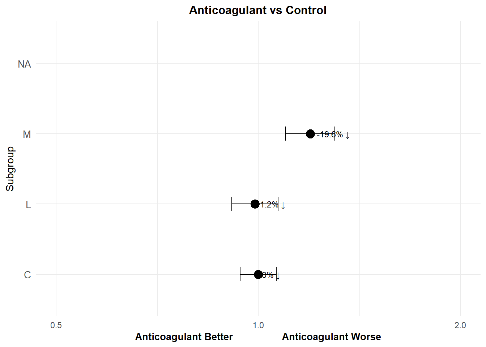

Group 29: Helena Møller, Emma Christensen, Frederik Holmstrup, Casper Harreby & Laura Christiansen
Short-term effects of early anticoagulant therapy
Effects of anticoagulants during the scheduled treatment period (mostly about 14 days) in completed unconfounded randomised trials in acute ischaemic stroke on: (a) recurrent ischaemic stroke, (b) haemorrhagic stroke, (c) death from any cause or non-fatal stroke (non-fatal stroke includes non-fatal recurrent strokes of ischaemic or unknown type and haemorrhagic strokes). The overall results of the 95% CI is represented by diamonds.
In the report it looks like this:
Loading libraries
#| eval: truelibrary("tidyverse")
Warning: package 'tidyverse' was built under R version 4.2.3
Warning: package 'ggplot2' was built under R version 4.2.3
Warning: package 'tibble' was built under R version 4.2.3
Warning: package 'tidyr' was built under R version 4.2.3
Warning: package 'readr' was built under R version 4.2.3
Warning: package 'purrr' was built under R version 4.2.3
Warning: package 'dplyr' was built under R version 4.2.3
Warning: package 'stringr' was built under R version 4.2.3
Warning: package 'forcats' was built under R version 4.2.3
Warning: package 'lubridate' was built under R version 4.2.3
── Attaching core tidyverse packages ──────────────────────── tidyverse 2.0.0 ──
✔ dplyr 1.1.4 ✔ readr 2.1.5
✔ forcats 1.0.0 ✔ stringr 1.5.1
✔ ggplot2 3.5.1 ✔ tibble 3.2.1
✔ lubridate 1.9.3 ✔ tidyr 1.3.1
✔ purrr 1.0.2
── Conflicts ────────────────────────────────────────── tidyverse_conflicts() ──
✖ dplyr::filter() masks stats::filter()
✖ dplyr::lag() masks stats::lag()
ℹ Use the conflicted package (<http://conflicted.r-lib.org/>) to force all conflicts to become errors
Warning: Removed 1 row containing missing values or values outside the scale range
(`geom_point()`).
Warning: Removed 1 row containing missing values or values outside the scale range
(`geom_errorbarh()`).
Warning: Removed 1 row containing missing values or values outside the scale range
(`geom_text()`).

Add Supporting Table
Combine the summary table and the forest plot:
library(gridExtra)
Warning: package 'gridExtra' was built under R version 4.2.3
Attaching package: 'gridExtra'
The following object is masked from 'package:dplyr':
combine
# Create a table of summary statisticstable <-tableGrob(summary |>select(DH14, Odds_Ratio, CI_Lower, CI_Upper, Reduction), rows =NULL)# Arrange the table and plot side by sidegrid.arrange(forest_plot, table, ncol =2)
Warning: Removed 1 row containing missing values or values outside the scale range
(`geom_point()`).
Warning: Removed 1 row containing missing values or values outside the scale range
(`geom_errorbarh()`).
Warning: Removed 1 row containing missing values or values outside the scale range
(`geom_text()`).